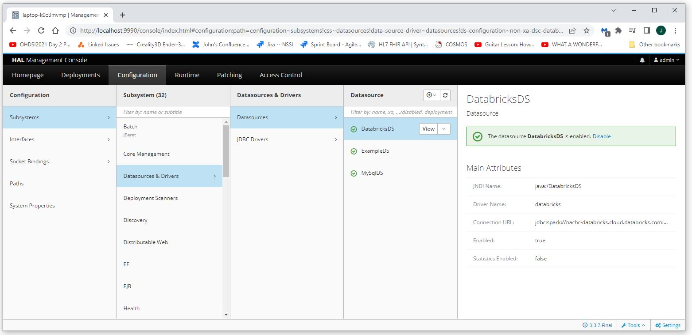
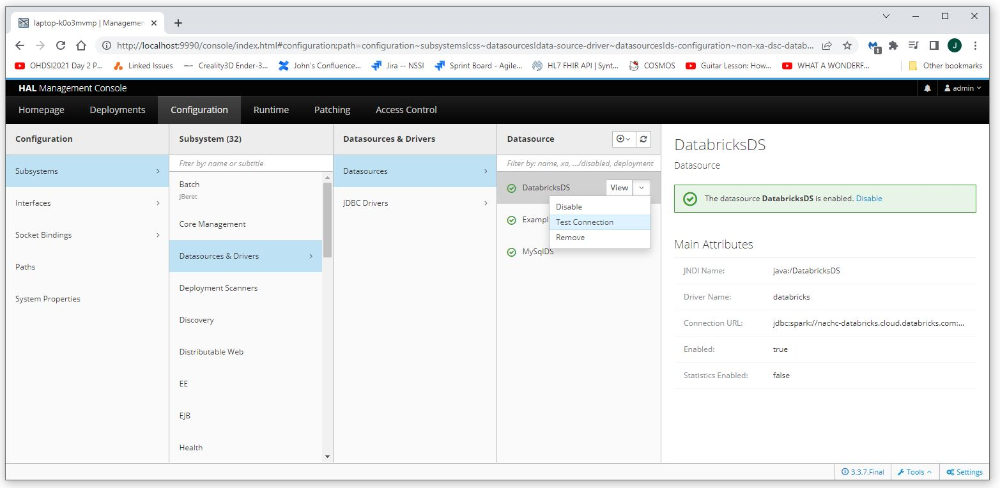

Create a Wildfly Datasource (Databricks)
This document details how to deploy and configure a datasource (database connection) for Databricks.
To create a datasource simply add something similar to the following to standalone.xml.
Note that this datasource uses the jar file module created using the instructions
here.
You will need to modify the URL and password to use the valid values for your system.
<datasource jndi-name="java:/DatabricksDS" pool-name="DatabricksDS">
<connection-url>jdbc:spark://my-data-bricks-server.cloud.databricks.com:443/default;transportMode=http;ssl=1;httpPath=sql/protocolv1/o/SomeNumberFromDatabricks/SomeNameFromDatabricks;AuthMech=3</connection-url>
<driver>databricks</driver>
<security>
<user-name>token</user-name>
<password>MyDatabricksToken</password>
</security>
</datasource>
Navigate to Configuration->Subsystems->Datasources & Drivers->Datasources.
You should now see the DatabricksDS.

Select View->Test Connection to test the connection.
